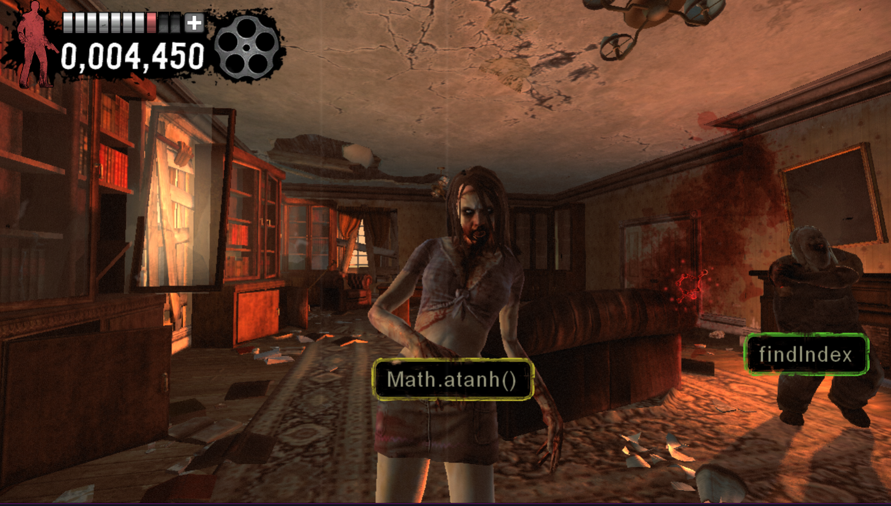
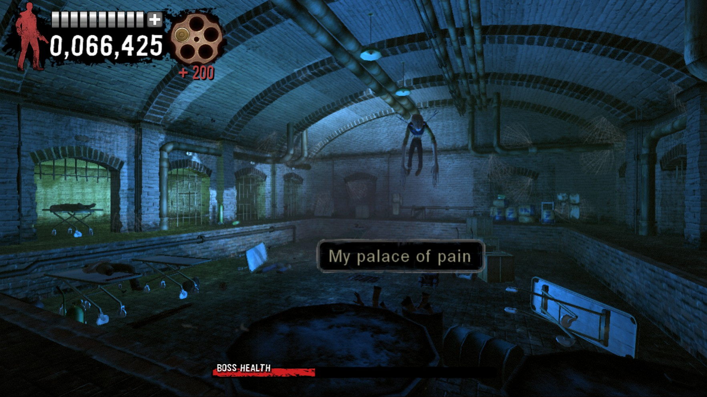

House of the Dead: Overkill
An on-rails shooter where you can use your keyboard to type words to shoot instead of clicking.
This is good for people learning to touch type or wishing to increase their words per minute. You can even mod the game to include differnt word lists that you might want to spell, even programing languages like javascript.


It's a good length, not too long, not too short with decent replayability, high scores, unlockables, etc.
They've gone for an over the top B-Movie style story which is very hit and miss. I think I prefer the campiness of the original.
I'd recommend it for people who are looking to improve there typing in a fun way. 3/5